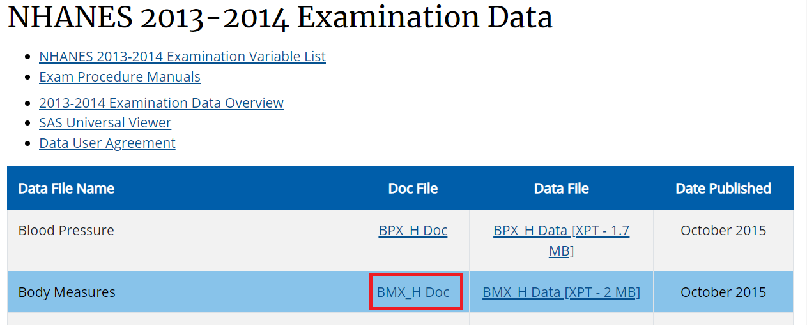

7.1.1 Article
Let us use the article by Flegal et al. (2016) as our reference. DOI:10.1001/jama.2016.6458, or UBC access.
Let us use the article by Flegal et al. (2016) as our reference. DOI:10.1001/jama.2016.6458, or UBC access.
Methods section from this article says:
Variables of interest:
age (eligibility and stratifying variable)sex (stratifying variable)race (stratifying variable)pregnancy status (eligibility)obesity/BMI status (main variable of interest for the paper)Search these variables using the NHANES variable keyword search within the 2013-14 cycle: cdc.gov/nchs/nhanes/search/




We are using same H index for demographic.
library(nhanesA)
demo13 <- nhanes('DEMO_H')
Demo13 <- nhanesTranslate('DEMO_H', names(demo13), data=demo13)## No translation table is available for SEQN## Translated columns: RIDSTATR RIAGENDR RIDRETH1 RIDRETH3 RIDEXMON DMQMILIZ DMQADFC DMDBORN4 DMDCITZN DMDYRSUS DMDEDUC3 DMDEDUC2 DMDMARTL RIDEXPRG SIALANG SIAPROXY SIAINTRP FIALANG FIAPROXY FIAINTRP MIALANG MIAPROXY MIAINTRP AIALANGA DMDHHSIZ DMDFMSIZ DMDHHSZA DMDHHSZB DMDHHSZE DMDHRGND DMDHRBR4 DMDHREDU DMDHRMAR DMDHSEDU INDHHIN2 INDFMIN2We are using same H index for BMI.
exam13 <- nhanes('BMX_H')
Exam13 <- nhanesTranslate('BMX_H', names(exam13), data=exam13)## No translation table is available for SEQN## Translated columns: BMDSTATS BMIWT BMIHT BMDBMIC BMDSADCMSee all the column names in the data
names(Demo13)## [1] "SEQN" "SDDSRVYR" "RIDSTATR" "RIAGENDR" "RIDAGEYR" "RIDAGEMN"
## [7] "RIDRETH1" "RIDRETH3" "RIDEXMON" "RIDEXAGM" "DMQMILIZ" "DMQADFC"
## [13] "DMDBORN4" "DMDCITZN" "DMDYRSUS" "DMDEDUC3" "DMDEDUC2" "DMDMARTL"
## [19] "RIDEXPRG" "SIALANG" "SIAPROXY" "SIAINTRP" "FIALANG" "FIAPROXY"
## [25] "FIAINTRP" "MIALANG" "MIAPROXY" "MIAINTRP" "AIALANGA" "DMDHHSIZ"
## [31] "DMDFMSIZ" "DMDHHSZA" "DMDHHSZB" "DMDHHSZE" "DMDHRGND" "DMDHRAGE"
## [37] "DMDHRBR4" "DMDHREDU" "DMDHRMAR" "DMDHSEDU" "WTINT2YR" "WTMEC2YR"
## [43] "SDMVPSU" "SDMVSTRA" "INDHHIN2" "INDFMIN2" "INDFMPIR"names(Exam13)## [1] "SEQN" "BMDSTATS" "BMXWT" "BMIWT" "BMXRECUM" "BMIRECUM"
## [7] "BMXHEAD" "BMIHEAD" "BMXHT" "BMIHT" "BMXBMI" "BMDBMIC"
## [13] "BMXLEG" "BMILEG" "BMXARML" "BMIARML" "BMXARMC" "BMIARMC"
## [19] "BMXWAIST" "BMIWAIST" "BMXSAD1" "BMXSAD2" "BMXSAD3" "BMXSAD4"
## [25] "BMDAVSAD" "BMDSADCM"demo13select <- Demo13[c("SEQN", # Respondent sequence number
"RIDEXPRG", # Pregnancy status at exam
"RIAGENDR", # Gender
"RIDAGEYR", # Age in years at screening
"RIDRETH3")] # Race/Hispanic origin w/ NH Asian
exam13select <- Exam13[c("SEQN", # Respondent sequence number
"BMXBMI")] # Body Mass Index (kg/m**2)head(demo13select)## SEQN RIDEXPRG RIAGENDR RIDAGEYR RIDRETH3
## 1 73557 <NA> Male 69 Non-Hispanic Black
## 2 73558 <NA> Male 54 Non-Hispanic White
## 3 73559 <NA> Male 72 Non-Hispanic White
## 4 73560 <NA> Male 9 Non-Hispanic White
## 5 73561 <NA> Female 73 Non-Hispanic White
## 6 73562 <NA> Male 56 Mexican Americanhead(exam13select)## SEQN BMXBMI
## 1 73557 26.7
## 2 73558 28.6
## 3 73559 28.9
## 4 73560 17.1
## 5 73561 19.7
## 6 73562 41.7Use the ID variable SEQN to merge both data:
merged.data <- merge(demo13select, exam13select,
by = c("SEQN"), all=TRUE)
head(merged.data)## SEQN RIDEXPRG RIAGENDR RIDAGEYR RIDRETH3 BMXBMI
## 1 73557 <NA> Male 69 Non-Hispanic Black 26.7
## 2 73558 <NA> Male 54 Non-Hispanic White 28.6
## 3 73559 <NA> Male 72 Non-Hispanic White 28.9
## 4 73560 <NA> Male 9 Non-Hispanic White 17.1
## 5 73561 <NA> Female 73 Non-Hispanic White 19.7
## 6 73562 <NA> Male 56 Mexican American 41.7dim(merged.data)## [1] 10175 6merged.data$SEQN <- NULLMissing data available?
require(tableone)## Loading required package: tableone## Warning: package 'tableone' was built under R version 4.2.1tab_nhanes <- CreateTableOne(data=merged.data,
includeNA = TRUE)
print(tab_nhanes,
showAllLevels = TRUE)##
## level Overall
## n 10175
## RIDEXPRG (%) Yes, positive lab pregnancy test 65 ( 0.6)
## The participant was not pregnant 1150 (11.3)
## Cannot ascertain if the particip 94 ( 0.9)
## <NA> 8866 (87.1)
## RIAGENDR (%) Male 5003 (49.2)
## Female 5172 (50.8)
## RIDAGEYR (mean (SD)) 31.48 (24.42)
## RIDRETH3 (%) Mexican American 1730 (17.0)
## Other Hispanic 960 ( 9.4)
## Non-Hispanic White 3674 (36.1)
## Non-Hispanic Black 2267 (22.3)
## Non-Hispanic Asian 1074 (10.6)
## Other Race - Including Multi-Rac 470 ( 4.6)
## BMXBMI (mean (SD)) 25.68 (7.96)summary(merged.data$BMXBMI)## Min. 1st Qu. Median Mean 3rd Qu. Max. NA's
## 12.10 19.70 24.70 25.68 30.20 82.90 1120We subset the data using criteria similar to the JAMA paper by Flegal et al. (2016) (see above)
analytic.data1 <- subset(merged.data, !is.na(BMXBMI)) # no missing BMI
dim(analytic.data1)## [1] 9055 5analytic.data2 <- subset(analytic.data1, RIDAGEYR >= 20) # Age >= 20
dim(analytic.data2)## [1] 5520 5table(analytic.data2$RIDEXPRG,useNA = "always")##
## Yes, positive lab pregnancy test The participant was not pregnant
## 65 1143
## Cannot ascertain if the particip <NA>
## 44 4268analytic.data3 <- subset(analytic.data2, # Pregnant women excluded
is.na(RIDEXPRG) | RIDEXPRG !=
"Yes, positive lab pregnancy test")
dim(analytic.data3)## [1] 5455 5Recode similar to the JAMA paper by Flegal et al. (2016) (see above)
analytic.data3$AgeCat<-cut(analytic.data3$RIDAGEYR,
c(0,20,40,60,Inf),
right = FALSE)
analytic.data3$Gender <- car::recode(analytic.data3$RIAGENDR,
"'1'='Male';
'2'='Female'")
table(analytic.data3$Gender,useNA = "always")##
## Female Male <NA>
## 2817 2638 0analytic.data3$Race <- car::recode(analytic.data3$RIDRETH3,
"c('Mexican American',
'Other Hispanic')='Hispanic';
'Non-Hispanic White'='White';
'Non-Hispanic Black'='Black';
'Non-Hispanic Asian'='Asian';
else=NA")
analytic.data3$Race <- factor(analytic.data3$Race,
levels = c('White',
'Black',
'Asian',
'Hispanic'))Compare with Table 1
with(analytic.data3, table(AgeCat,Gender))## Gender
## AgeCat Female Male
## [0,20) 0 0
## [20,40) 901 909
## [40,60) 999 897
## [60,Inf) 917 832apply(with(analytic.data3, table(AgeCat,Gender)),1,sum)## [0,20) [20,40) [40,60) [60,Inf)
## 0 1810 1896 1749with(analytic.data3, table(AgeCat,Race))## Race
## AgeCat White Black Asian Hispanic
## [0,20) 0 0 0 0
## [20,40) 734 362 216 412
## [40,60) 759 383 251 449
## [60,Inf) 850 370 156 353analytic.data3m <- subset(analytic.data3,
Gender == "Male")
with(analytic.data3m, table(AgeCat,Race))## Race
## AgeCat White Black Asian Hispanic
## [0,20) 0 0 0 0
## [20,40) 386 182 106 189
## [40,60) 360 179 120 215
## [60,Inf) 384 195 74 169analytic.data3f <- subset(analytic.data3,
Gender == "Female")
with(analytic.data3f, table(AgeCat,Race))## Race
## AgeCat White Black Asian Hispanic
## [0,20) 0 0 0 0
## [20,40) 348 180 110 223
## [40,60) 399 204 131 234
## [60,Inf) 466 175 82 184Also see Dhana (2018) for a tidyverse solution.